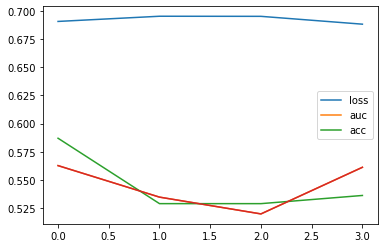
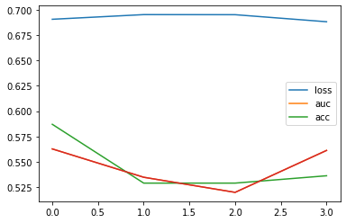

Greetings from Layerwise Learning
revealOptions: transition: ‘fade’ transitionSpeed: ‘fast’ width: 1400 —
TPU setup on Google Cloud
- Was able to setup TPU.
- But, currently does not support tf.string data type which is used by tfq.ControlledPQC.
GPU-based quantum simulation with qsimcirq
- Tried qsimcirq with GPU and NVIDIA cuQuantum SDK
- Much slower than the default backend, may be due to less number of qubits.
Alternatives
- Using Pennylane + TF on GPU for faster training.
Results on Quantum CNN
- Quark Gluon
- 0 1 images
- 500 images per class
- Center cropped $\rightarrow$ (40,40)
- Log Scaling
- Standardize
- DRC Ansatz
- Feature maps: No need
-
Layerwise learning
QCNN on Quark Gluon
Layer (type) Output Shape Param #
=================================================================
input_10 (InputLayer) [(None, 8, 8, 1)] 0
qconv2d_1 (QConv2D) (None, 4, 4, 1) 80
max_pooling2d_9 (MaxPooling (None, 2, 2, 1) 0
2D)
flatten_8 (Flatten) (None, 4) 0
dense_18 (Dense) (None, 8) 40
dense_19 (Dense) (None, 2) 18
=================================================================
Quantum Circuit
(0, 0): ───H───Y^w0───@───Y^w2───@───Y^w4───@───Y^w6───@───
│ │ │ │
(0, 1): ───H───Y^w1───@───Y^w3───@───Y^w5───@───Y^w7───@───

- Kernel size: 3 x 3
- Strides: 2 x 2
Results
 



QCNN on Quark Gluon
Layer (type) Output Shape Param #
=================================================================
input_10 (InputLayer) [(None, 40, 40, 1)] 0
qconv2d_1 (QConv2D) (None, 20, 20, 1) 320
max_pooling2d_9 (MaxPooling (None, 10, 10, 1) 0
2D)
flatten_7 (Flatten) (None, 100) 0
dense_18 (Dense) (None, 8) 808
dense_19 (Dense) (None, 2) 18
=================================================================
Quantum Circuit
┌──┐ ┌──┐ ┌──┐ ┌──┐
(0, 0): ───H───Y^w0───@───Y^w4─────@────Y^w8────@───Y^w12─────@────Y^w16───@───Y^w20─────@────Y^w24───@───Y^w28─────@────
│ │ │ │ │ │ │ │
(0, 1): ───H───Y^w1───@───Y^w5────@┼────Y^w9────@───Y^w13────@┼────Y^w17───@───Y^w21────@┼────Y^w25───@───Y^w29────@┼────
││ ││ ││ ││
(0, 2): ───H───Y^w2───@───Y^w6────@┼────Y^w10───@───Y^w14────@┼────Y^w18───@───Y^w22────@┼────Y^w26───@───Y^w30────@┼────
│ │ │ │ │ │ │ │
(0, 3): ───H───Y^w3───@───Y^w7─────@────Y^w11───@───Y^w15─────@────Y^w19───@───Y^w23─────@────Y^w27───@───Y^w31─────@────
└──┘ └──┘ └──┘ └──┘
- Kernel size: 3 x 3
- Strides: 2 x 2
Results


Status
Done:
- Utitlizing TPU and QsimCirq with GPU
- Layerwise learning for Quark Gluon dataset
Goals for next week:
- Integrate Pennylane with TF and Cirq.
- Train model with more number of qubits on GPU on Quark Gluon.
- Reducing number of datapoints per qubits and using more gates.
Questions:
- Is 1000 samples enough?
- Will increasing the number of QConv2D layers help?
References
- Cong, I., Choi, S. & Lukin, M.D. Quantum convolutional neural networks. Nat. Phys. 15, 1273–1278 (2019). https://doi.org/10.1038/s41567-019-0648-8
- S.~Y.~C.~Chen, T.~C.~Wei, C.~Zhang, H.~Yu and S.~Yoo, ``Quantum convolutional neural networks for high energy physics data analysis,’’ Phys. Rev. Res. \textbf{4} (2022) no.1, 013231 doi:10.1103/PhysRevResearch.4.013231
- Liu, J., Lim, K.H., Wood, K.L. et al. Hybrid quantum-classical convolutional neural networks. Sci. China Phys. Mech. Astron. 64, 290311 (2021). https://doi.org/10.1007/s11433-021-1734-3
- Tüysüz, C., Rieger, C., Novotny, K. et al. Hybrid quantum classical graph neural networks for particle track reconstruction. Quantum Mach. Intell. 3, 29 (2021). https://doi.org/10.1007/s42484-021-00055-9
- Pérez-Salinas, A., Cervera-Lierta, A., Gil-Fuster, E., & Latorre, J. (2020). Data re-uploading for a universal quantum classifier. Quantum, 4, 226.
- Chen, Yusui & Hu, Wenhao & Li, Xiang. (2021). Feasible Architecture for Quantum Fully Convolutional Networks.
- Chen, Yixiong. (2021). QDCNN: Quantum Dilated Convolutional Neural Network.